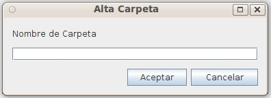

Este formulario permite crear una carpeta simple introduciendo el nombre. La carpeta se creará dentro de la carpeta actual. La seguridad (ACL) será el mismo que el de la carpeta contenedora

Para crear una carpeta eligiendo tipo e introduciendo información detallada debe utilizarse: Añadir Carpeta Ampliado
En caso de producirse un error (carencia de permisos del usuario, error de comunicaciones, fecha incorrecta, etc), la operación se cancela y se comunicará al usuario el motivo del error.